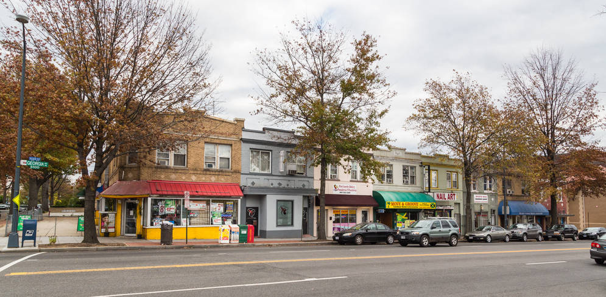
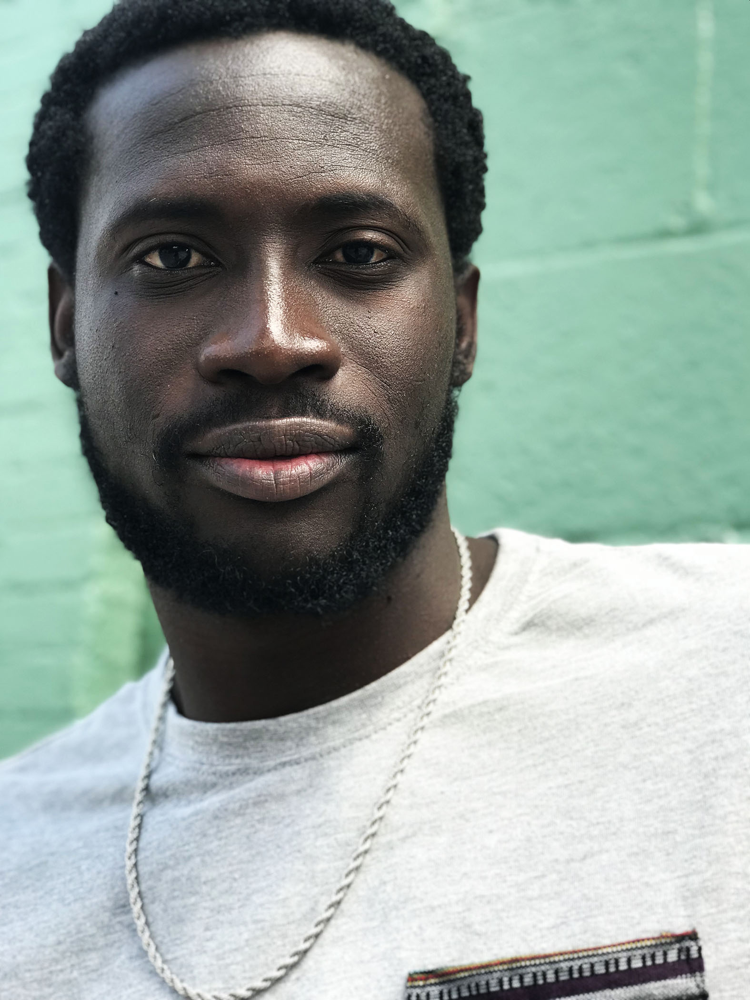
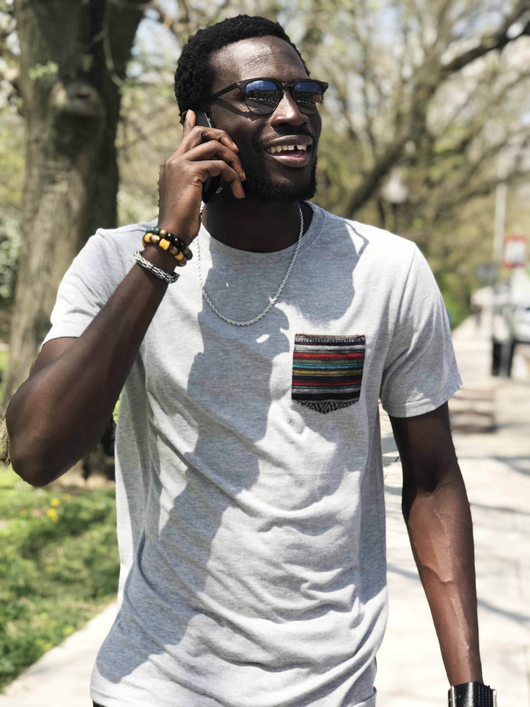

Northeast DC is where much of the most dramatic neighborhood changes in the city have occurred over the last dozen years. NE Washington DC (also known as Northeast DC) is located north of East Capitol Street and east of North Capitol Street. This part of the city includes part of Capitol Hill but is mostly residential and is known to have a high crime rate relative to the rest of the city. Neighborhoods in NE include Brentwood, Brookland, Ivy City, Marshall Heights, Pleasant Hill, Stanton Park, Trinidad, Michigan Park, Riggs Park, Fort Totten, Fort Lincoln, Edgewood, Deanwood, and Kenilworth. The population of Northeast is predominantly African-American, particularly east of the Anacostia River.
Unfortunately, you can probably assume there is a lot of crime that goes down here, but I try to stay as far a way as I possibly came. I mean, I’m no bulletproof Superman that can go break up gun fights or some midnight vigilante who can stop anyone in the middle of robbing people with batarangs lol.
In fact, it’s important that I stay away from all that action, so I can be able to make my sets and expose the people doing these heinous acts. Twitter and the newspaper are my best friends besides my eye-witness observations. I’m able to read news about Northeast DC and write new material to get these crooked cops off the streets.

